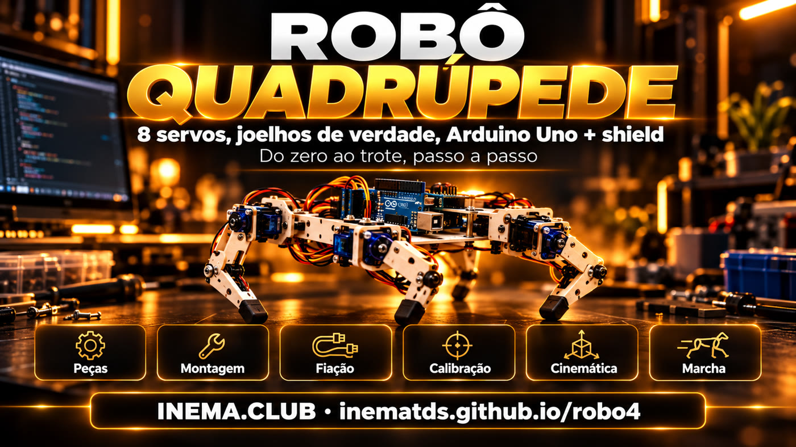

O robo4 é um plano completo para construir, em casa, um pequeno robô de quatro patas (uns 20 cm) que anda. Cada perna tem dois motores pequenos, chamados servos: um no quadril e outro no joelho. Quem controla tudo é um Arduino Uno com uma placa de encaixe (shield) por cima, onde os 8 servos são plugados. Aqui estão a lista de peças, os diagramas de fiação, o passo a passo de montagem e calibração, e o código que já compila. Serve para quem quer aprender robótica com as mãos; precisa de um computador, das peças da lista e de uma tarde para montar.
O que é
Um quadrúpede simples, que anda de verdade
Duas juntas por perna é o mínimo para o pé subir, ir para a frente e descer. O resto é calibração e ritmo.

🦿 Joelhos de verdade
Quadril e joelho em cada perna (8 servos MG90S de engrenagem de metal). O pé faz um arco: sobe, avança e apoia.
🔌 Sem protoboard
O Sensor Shield V5 tem 3 pinos por porta: os servos plugam direto no D2 a D9. A força dos servos vem de uma fonte separada.
🧮 Código pronto
Cinemática inversa, trote, marcha lenta, giro e calibração salva na memória. Controle por letras no Monitor Serial.
Como funciona
Do saco de peças ao trote
Sete etapas, que viram os 10 passos do guia: bateria = passo 1, eletrônica = 2, servos em 90° = 3, pernas = 4 e 5, calibrar = 6 a 8, marcha lenta = 9, trote = 10.
Comprar e carregar a bateria→Eletrônica na bancada→Servos em 90°→Montar pernas→Calibrar→Marcha lenta→Trote
Onde o pé deve estar
O código pensa em milímetros: "pé 15 mm à frente e 85 mm abaixo do quadril". A cinemática inversa (lei dos cossenos) converte isso em dois ângulos.
Para onde o servo vai
90° no servo = coxa na vertical e joelho em ângulo reto. Quadril: 90 + sinal × ângulo + ajuste. Joelho: 90 + sinal × (ângulo − 90) + ajuste.
Quando cada pé sobe
Na marcha lenta sobe um pé por vez (três no chão) e o corpo balança para o peso ficar sobre eles. No trote sobem dois pés em diagonal. Tudo atualizado 50 vezes por segundo.
Peças e ferramentas
O que comprar
Preços em reais são estimativas de outubro de 2026. Total básico: R$ 450 a 850, sem impressora 3D e sem os opcionais.
Ilustração gerada por IA: o kit completo antes da montagem.
No celular, arraste a tabela para o lado para ver todas as colunas.
Item
Qtd
Estimativa
Por que este
Arduino Uno R3 + cabo USB
1
R$ 50–130
Cérebro do robô
Sensor Shield V5.0 para Uno
1
R$ 20–35
Pinos S/V/G para plugar os servos e borne de força separado
Micro servo MG90S
8 (+1 reserva)
R$ 18–30 cada
Engrenagem de metal aguenta o peso no joelho; o SG90 de plástico espana
Bateria LiPo 2S 7,4 V, 1000–2200 mAh, XT60
1
R$ 70–140
Alimenta servos e Arduino
UBEC / step-down 5–6 V, 5 A ou mais
1
R$ 20–45
8 servos puxam 4 a 6 A no pico
Chave liga/desliga (≥ 5 A)
1
R$ 5–10
Cortar tudo de uma vez
Alarme de tensão para LiPo (bipador)
1
R$ 8–15
Apita antes de a bateria descer demais
Plugue P4 macho 5,5 × 2,1 mm com rabicho
1
R$ 5–10
Leva a bateria ao jack DC do Uno (o shield cobre o pino VIN)
Fio 18 AWG vermelho e preto (~1 m)
1
R$ 8–15
Linha de força bateria → chave → UBEC → borne
Carregador balanceado 2S
1
R$ 60–150
LiPo só carrega com balanceador
Chassi + 4 coxas + 4 canelas
1 jogo
R$ 10–40
Impresso em 3D ou acrílico/MDF 3 mm
Pés de borracha, parafusos M2/M3, espaçadores, abraçadeiras, velcro
kit
R$ 30–60
Fixação e aderência
Opcionais: Bluetooth HC-05, ultrassom HC-SR04, IMU MPU-6050
—
R$ 50–80
Controle pelo celular, desviar de obstáculo, equilíbrio
Ferramentas
Chave Phillips pequena, alicate de corte, multímetro e ferro de solda (só para o XT60 e a chave).
Software
Arduino IDE ou arduino-cli (ferramenta de linha de comando do Arduino). Os comandos deste guia usam o arduino-cli.
# instala o arduino-cli (Linux/macOS; no Windows baixe em arduino.github.io/arduino-cli)mkdir -p ~/.local/bincurl -fsSL https://raw.githubusercontent.com/arduino/arduino-cli/master/install.sh | BINDIR=~/.local/bin shexport PATH="$HOME/.local/bin:$PATH"# ponha esta linha no ~/.bashrcarduino-cli core update-indexarduino-cli core install arduino:avrarduino-cli lib install Servo# Linux: permissão para usar a porta USB (saia e entre na sessão depois)sudo usermod -aG dialout $USER
Clones com chip CH340 aparecem como /dev/ttyUSB0 e, no Windows, podem pedir o driver CH340.
Código do projeto
Baixe o repositório com os dois sketches: montagem e firmware.
Os diagramas estão em SVG no repositório (guia/assets/). No celular eles ficam pequenos: toque em "Abrir em tela cheia". Para imprimir o desenho das peças em tamanho real, use as cotas escritas nele (em mm), não a escala da tela.
Regra número 1: os 8 servos nunca são alimentados pelo 5 V do Uno. Tire o jumper SEL do shield (a pecinha plástica que liga o 5 V do Uno aos pinos V dos servos) e ligue o UBEC no borne (conector de parafuso) dos servos. As trilhas do shield são finas: se os servos tremerem com o robô andando, reforce levando um fio 18 AWG do UBEC direto à fileira de pinos V.
Troque /dev/ttyACM0 pela porta do seu Uno (no Windows, algo como COM3). arduino-cli board list mostra qual é.
1
Teste a energia sem nada ligado
Carregue a LiPo. Ligue bateria → chave → UBEC e meça a saída com o multímetro. Tem que dar entre 5 e 6 V. Só depois ligue qualquer servo.
2
Shield no Uno, jumper SEL fora
Encaixe o Sensor Shield. Retire o jumper SEL e confira com o multímetro que o pino V do shield não está ligado ao 5 V do Uno (clones variam). Ligue o UBEC no borne dos servos. A lógica do Uno recebe a LiPo pelo jack DC (o conector redondo ao lado do USB), com um plugue P4 5,5 × 2,1 mm: centro positivo, fio vermelho no pino do meio. Confira a polaridade com o multímetro antes de encaixar.
O regulador do Uno precisa de uns 7 V no jack. Regule o alarme da LiPo para 3,5 V por célula (7,0 V no total): ele apita antes de o Uno começar a reiniciar.
Ilustração gerada por IA: eletrônica montada na bancada antes de ir para o chassi.
3
Servos soltos em 90°
Plugue os 8 servos nos pinos D2 a D9 (marrom no G, vermelho no V, laranja no S) sem os braços (horns, a pecinha plástica que encaixa no eixo) presos. Ligue a chave (os servos recebem força do UBEC) e carregue o sketch de montagem: eles vão para 90° um por vez e ficam travados. Não gire o eixo com a mão enquanto estiverem ligados.
Corte as peças pelo desenho com medidas. Parafuse os servos do quadril nas janelas das paredes laterais, eixo para fora, e prenda o horn no topo de cada coxa: coxa na vertical, apontando para o chão. Encaixe o servo do joelho na janela da coxa com o eixo para fora (o mesmo lado do quadril) e o corpo subindo pela coxa, voltado para dentro do robô. A canela vai no horn do joelho, do lado de fora da coxa, apontando para a FRENTE do robô em ângulo reto (vale para as 4 pernas). Se ela apontar para trás, o joelho dobra do jeito errado e o robô não fica em pé, e trocar o sinal no código não resolve. Se o horn não encaixar em ângulo reto exato, use o dente mais próximo: o resto se corrige no passo 7. Opcional: para menos folga, um parafuso M3 com porca travante (porca com anel de nylon que não solta) no lado oposto ao eixo, passando por uma segunda placa, faz de mancal.
Ilustração gerada por IA: vista explodida (shield, Uno, chassi, bateria e UBEC, pernas).Ilustração gerada por IA: servo do quadril no chassi, servo do joelho na ponta da coxa, cabos presos ao longo da perna.
5
Feche o corpo
Uno + shield em cima com espaçadores M3 de 25 mm (assim a placa passa por cima dos servos do quadril); bateria e UBEC embaixo com velcro. Prenda os cabos com abraçadeiras e deixe folga no joelho, senão o fio puxa quando a perna dobra.
6
Carregue o firmware
O firmware tem a cinemática, as marchas e a calibração. Deixe o robô suspenso (sobre um pote, pernas no ar) na primeira vez. Sem calibração gravada ele liga em modo montagem, com tudo em 90°, e só fica em pé quando você mandar.
Digite m para pôr tudo em 90°. Corrija a junta torta com o comando o <perna> <junta> <graus>, digitado de uma vez e com Enter (o arduino-cli monitor não mostra o que você digita; na Arduino IDE deixe o Monitor Serial em "Nova linha"). O valor substitui o ajuste anterior daquela junta, não soma: perna 0 a 3 (FE, FD, TE, TD), junta 0 = quadril, 1 = joelho, graus de −30 a 30. Grave com g na EEPROM (a memória do Uno que não apaga ao desligar).
m# todos em 90°o 0 1 -6# joelho da frente esquerda: −6° (se piorou, use 6)p# mostra os ajustesg# grava na EEPROM (fica salvo ao desligar)
8
Fique em pé
Digite x. As pernas vão aos poucos até a pose em pé (cada servo anda no máximo 5° a cada 20 ms, o que também poupa a fonte). As quatro devem dobrar igual. Se alguma dobrar para o lado errado, troque o sinal dela em SENTIDO[][] no código, compile e carregue de novo.
Com o robô suspenso, digite c (marcha lenta, em inglês creep) e confira a ordem: trás esquerda, frente esquerda, trás direita, frente direita. O corpo balança para a frente e para trás: é de propósito, para o peso ficar sobre as três pernas no chão. Depois ponha no chão.
BALANCO só leva o corpo para a frente e para trás. Se tombar para a frente ou para trás, aumente BALANCO (12 → 18) ou diminua PASSO. Se tombar para o lado, o que resolve é baixar a altura com - ou afastar as pernas (base mais larga que 80 mm).
10
Trote e comandos
Com a marcha lenta estável, passe para o trote.
w frente s ré a gira esq. d gira dir.
c marcha lenta x parar z deitar + / - altura
Referência visual
Como ele fica montado
Imagens geradas por IA para mostrar o objetivo. Ainda não são fotos de um protótipo real.
Robô montado: Uno + shield em cima, bateria embaixo, dois servos por perna.De perto: o joelho é um segundo servo na ponta da coxa.
Termos
Palavras que aparecem no guia
Se uma palavra travou a leitura, ela deve estar aqui.
Termo
O que é
Servo
Motor pequeno que gira até um ângulo pedido (0 a 180°) e fica parado ali.
Horn
Braço plástico que encaixa no eixo do servo; é nele que a perna é parafusada.
Shield
Placa que encaixa por cima do Arduino e acrescenta conectores.
Jumper SEL
Pecinha plástica no shield que liga o 5 V do Arduino aos servos. Aqui ela sai.
Borne
Conector com parafuso onde o fio é preso apertando.
LiPo 2S
Bateria de lítio-polímero com 2 células em série: 7,4 V nominais.
XT60
Conector amarelo comum em baterias LiPo, aguenta corrente alta.
UBEC
Regulador que baixa a tensão da bateria para 5–6 V com corrente suficiente para os servos.
AWG
Medida de espessura do fio: quanto menor o número, mais grosso (18 AWG é mais grosso que 20).
Mancal
Apoio do lado oposto ao eixo que deixa a peça girar sem folga.
EEPROM
Memória do Arduino que não apaga ao desligar; guarda a calibração.
Sketch
Nome do programa do Arduino (a pasta com o arquivo .ino).
Monitor Serial
Janela de texto onde você conversa com o Arduino pelo cabo USB.
Step-down
Regulador que baixa a tensão (o UBEC é um step-down).
I2C
Ligação de 2 fios (A4 e A5 no Uno) usada por sensores como a IMU.
IMU
Sensor que mede inclinação e giro (ex.: MPU-6050).
Jack DC / P4
Conector redondo de energia do Uno e o plugue que encaixa nele.
FQBN
Nome completo da placa para o arduino-cli: arduino:avr:uno.
Cinemática inversa
Conta que transforma "onde o pé deve estar" nos ângulos do quadril e do joelho.
Marcha lenta (creep) e trote
Jeitos de andar: um pé no ar por vez, ou dois pés em diagonal.
Problemas comuns
Se algo der errado
Quase todo problema de quadrúpede com servo é energia ou calibração.
Sintoma
Causa provável
O que fazer
Arduino reinicia quando os servos mexem
Servos tirando energia do Uno
Jumper SEL fora, servos só pelo UBEC, GND comum
Servo treme parado
Fonte fraca ou fio fino
UBEC de 5 A ou mais, fio 18 AWG na linha de força, bateria carregada
Servo esquenta
Forçando contra o limite
Ajuste com o comando o; veja se a perna não bate no chassi
Perna dobra para o lado errado
Sinal invertido, ou canela montada apontando para trás
Confira se a canela aponta para a frente em 90° (passo 4); se sim, troque o sinal em SENTIDO[][]
Anda torto
Lados calibrados diferente
Comando m, depois iguale as pernas com o comando o
Tropeça
Pé sobe pouco
Aumente ELEVA no código
Cai para o lado no trote
Passo longo ou rápido demais
Diminua PASSO ou aumente CICLO_TROTE
Não carrega o código
Bluetooth ligado no D0/D1
Desligue o módulo durante o upload
Bateria LiPo: carregue só com carregador balanceado e por perto. Não descarregue abaixo de 6,6 V no total. Bateria estufada vai para o descarte, nunca para o robô.
Próximos passos
Depois que ele andar
Tudo cabe nos pinos que ficaram livres no Uno.
Agora
Plano, diagramas e códigoLista de peças, fiação, calibração, cinemática e duas marchas. O código compila; ainda não foi testado num robô montado.
Extra 1
Controle pelo celularMódulo Bluetooth HC-05 no D0/D1: as mesmas letras, mandadas por um app de terminal serial.
Extra 2
Desviar de obstáculosSensor ultrassônico HC-SR04 no D10/D11: para ou gira quando algo chega perto.
Extra 3
EquilíbrioIMU MPU-6050 no A4/A5: lê a inclinação e corrige a altura de cada perna.